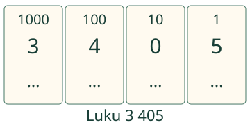
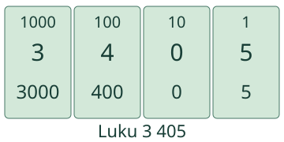
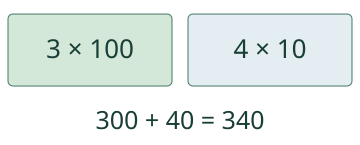

<link rel="stylesheet" href="lesson.css">
<section data-b12-place>

<section data-teaching-step="1" data-lesson-role="teaching-step" data-audience-coupled>
<div class="intro"><p>Aava lajittelee arvokortit. <strong>Sama luku, monta osaa.</strong></p></div>
<div data-explore><button type="button" data-action="step">Avaa seuraava osa</button></div>
<div data-model></div>
<p data-caption>Numeroiden paikat näkyvät. Avaa osat yksi kerrallaan.</p>


<details data-tools data-lesson-role="teaching-step"><summary>Toista tai vaihda lukua</summary><button type="button" data-action="play">Toista osat</button><button type="button" data-action="stop">Pysäytä</button><button type="button" data-action="model-reset">Mallin alkuun</button><label>Luku<select data-model-case><option value="zeroGap">3 405</option><option value="twoZero">2 061</option><option value="empty">0</option><option value="large">7 000</option></select></label><p>Toisto avaa osien merkityksiä. Se ei esitä kellonaikaa eikä mittaa laskunopeutta.</p></details>
</section>

<nav aria-label="Oppitunnin kohdat" data-lesson-role="metadata"><a href="#purku-miksi">Miksi nolla?</a> · <a href="#purku-kokeile">Kokeile</a> · <a href="#purku-lopuksi">Lopuksi</a></nav>

<section id="purku-miksi"><section data-teaching-step="3-1" data-lesson-role="teaching-step"><h2>Osat kuuluvat samaan lukuun</h2><p>Luvun <strong>3 405</strong> numero 3 tarkoittaa kolmea tuhatta. Numero 4 tarkoittaa neljää sataa. Kymppejä ei ole ja ykkösiä on viisi. Siksi <strong>3 405 = 3 000 + 400 + 0 + 5</strong>.</p><p>Summasta voi jättää nollaosan pois: <strong>3 000 + 400 + 5</strong> on sama määrä. Luvun <strong>3 405</strong> nollaa ei voi pudottaa pois: <strong>345</strong> on eri luku.</p></section>
<section data-teaching-step="3-2" data-lesson-role="question"><p data-lesson-role="question"><strong>Ennusta:</strong> muuttaako 5 + 400 + 3 000 määrää?</p><details data-lesson-role="answer"><summary>Katso perustelu</summary><p>Ei. Osien järjestys voi vaihtua. Niiden summa on yhä 3 405. Paikka-arvo tarkoittaa numeron paikkaa luvussa, ei summan osien esitysjärjestystä.</p></details></section>
<section data-teaching-step="3-3" data-lesson-role="teaching-step"><h3>Toinen luku: 2 061</h3><p>Tuhansia on kaksi, satoja ei yhtään, kymppejä kuusi ja ykkösiä yksi. <strong>2 061 = 2 000 + 0 + 60 + 1</strong>. Kuusi ei tarkoita tässä kuutta ykköstä vaan kuutta kymppiä.</p></section>
<section data-teaching-step="3-4" data-lesson-role="teaching-step"><h3>Purku voi olla myös toisenlainen</h3><p><strong>340 = 300 + 40 = 200 + 140 = 34 × 10.</strong> Yksi satanen on kymmenen kymppiä. Vaihto muuttaa osien määrää, mutta ei yhteisarvoa. Merkintä 34 × 10 tarkoittaa 34 kymppiä.</p>
<details data-lesson-role="teaching-step"><summary>Kokeile vaihtaa satanen kympeiksi</summary><button type="button" data-action="exchange">Vaihda yksi satanen</button><div data-exchange></div><p data-exchange-caption>3 sataa ja 4 kymppiä: yhteensä 340.</p><p>Kolmen vaihdon jälkeen näkyy 0 sataa ja 34 kymppiä. Seuraava painallus palauttaa alkuun. Kortit ovat arvoja, niiden piirretty pinta-ala ei mittaa määrää.</p></details></section></section>


<section data-teaching-step="4" data-lesson-role="teaching-step">
<section id="purku-kokeile"><h2>Kirjoita oma purku</h2><label>Tehtävä<select data-task><option value="expand">Hajotelma</option><option value="zeroGap">Nolla keskellä</option><option value="missing">Puuttuva osa</option><option value="split">Nimetyt osat</option><option value="tens">Kaikki kymmenet</option><option value="regroup">Yli kymmenen kymppiä</option><option value="transfer">Arvokortit</option><option value="higher">Suurempi luku</option><option value="zero">Nolla</option></select></label><p data-question>Hajota 3 405 vähintään kahteen pienempään osaan. Käytä plusmerkkiä.</p>
<div data-single><label><span data-answer-label>Hajotelma plusmerkeillä</span><input data-answer inputmode="text" autocomplete="off" placeholder="esim. 300 + 40 + 5"></label></div>
<div data-many hidden><label><span data-field-label>Tuhansien osa</span><input data-answer inputmode="numeric" autocomplete="off"></label><label><span data-field-label>Satojen osa</span><input data-answer inputmode="numeric" autocomplete="off"></label><label><span data-field-label>Kymppien osa</span><input data-answer inputmode="numeric" autocomplete="off"></label><label><span data-field-label>Ykkösten osa</span><input data-answer inputmode="numeric" autocomplete="off"></label></div>
<p>Pluskenttään käy 2–8 pienempää osaa, missä järjestyksessä tahansa. Esimerkiksi 300 + 40 + 5 on luvun 345 purku. Muissa kentissä kirjoita pyydetyn osan arvo tai määrä. Välilyönnit luvun ryhmittelyssä käyvät; tyhjä ei ole 0.</p><button type="button" data-action="check">Tarkista</button><p data-feedback data-result="neutral" aria-live="polite">Tarkista, kun olet valmis.</p><details data-lesson-role="hint"><summary>Tarvitsen vihjeen</summary><p>Nimeä ensin paikat oikealta: ykköset, kymmenet, sadat, tuhannet. Kerro numeron määrä sen lukuyksiköllä. Tyhjän paikan osa on 0. Yksi satanen voidaan esittää kymmenenä kymppinä.</p></details></section>
</section>


<section data-teaching-step="5" data-lesson-role="teaching-step">
<details data-lesson-role="teaching-step"><summary>Vielä suurempiin lukuihin</summary><p>Periaate jatkuu: <strong>120 406 = 100 000 + 20 000 + 400 + 6</strong>. Tuhansien ja kymppien osat ovat tässä nollia. Etsi kuvittelemastasi seitsemännumeroisesta luvusta paikat, jotka pitää merkitä nollalla.</p></details>
</section>

<details class="teacher" data-lesson-role="teacher-note"><summary>Opettajalle ja ilman ruutua</summary><p>Vuosiluokat 3–6, ydinesitieto M-PLACE-04. Tavoite on luonnollisen luvun hajottaminen ja kokoaminen lukuyksiköistä, myös ei-tavanomaisin osin. Kertolaskumerkintä avataan määränä lukuyksiköitä; nopeaa kertotaulumuistia tai ääneen nimeämistä ei vaadita.</p><p>Paperilla: kirjoittakaa 1 000:n, 100:n, 10:n ja 1:n arvokortteja. Rakentakaa 2 061 ja vaihtakaa satanen kymmeneen kymppiin toisessa luvussa. Pyydä oppijaa perustelemaan, mikä säilyi. Käyttäkää myös eri järjestyksessä annettuja osia. Kuva ei ole oikeiden eurosetelien kuvaus.</p><p>Tarkistin tukee kokonaislukuja 0–9 999 999 ja enintään 128 merkin vastausta. Tämä ei kata kaikkia luonnollisia lukuja eikä desimaaleja. Pluspurussa jokaisen osan on oltava pienempi kuin annettu luku. Nollalle on oma yksittäisen lukuarvon tehtävä. Paikkakentissä arvot sidotaan nimettyihin paikkoihin; vapaassa summassa hyväksytään samanarvoiset vaihtoehdot. Tarkistus ja vihje ovat paikallista harjoittelua, eivät todiste itsenäisestä tai säilyvästä hallinnasta. Henkilöhistoriaa ei tallenneta.</p></details>

<section data-teaching-step="6" data-lesson-role="teaching-step">
<p id="purku-lopuksi" data-lesson-role="question"><strong>Lopuksi:</strong> miksi nollan voi jättää summasta 2 000 + 0 + 60 + 1 pois, mutta luvusta 2 061 ei?</p>
</section>
<noscript data-lesson-role="metadata"><p>Ilman JavaScriptiä näet alkutilanteen ja ratkaistun esimerkin. Avaa selitykset ja kokeile arvokortteja paperilla. Mallin vaiheet ja tarkistus tarvitsevat JavaScriptin.</p></noscript></section>
